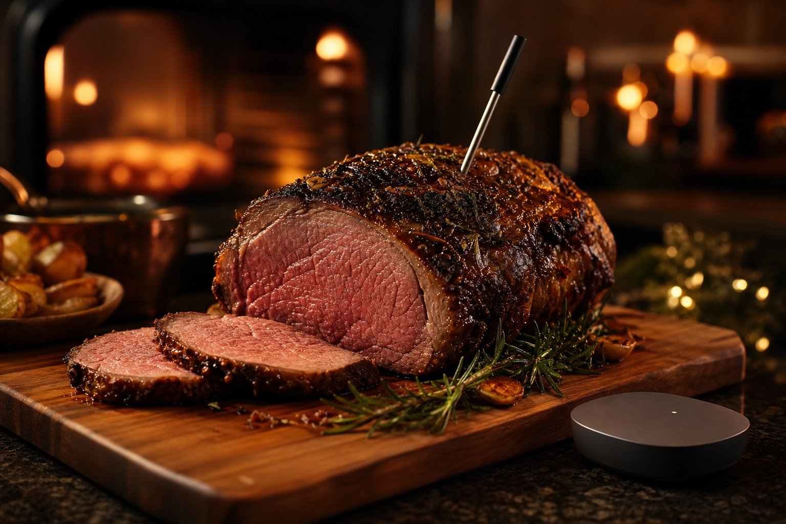

Seasonal · Holiday 2026
Holiday hosting: how much air fryer capacity does a full table actually need?
Capacity is layers and minutes, not quarts. The worksheet we would actually use.
Each guide starts with a question, answers it from official listings, and ends with a checklist you can use in the store. These are editorial hypotheses — not claims about search volume or product superiority.
Publishing cadence: two question-shaped guides per month, plus a seasonal cluster (Holiday 2026 is live). Every new guide joins the sitemap and the RSS feed on the day it publishes, and its arrivals are measured (five events, privacy-preserving) before the next topic is chosen.
Seasonal · Holiday 2026
Capacity is layers and minutes, not quarts. The worksheet we would actually use.

Seasonal · Holiday 2026
USDA doneness temperatures, probe placement, and the walk-away test.
Guide
Form factor decides footprint, loading, and what fits. Compare basket fryers (P-01, P-03) with oven-style French-door models (P-02) on dimensions first — 13.38×11.81×10.63 in vs 16.9×15.8×14.8 in — before features. Ask: will doors swing? Will you lift 26.5 lb?
Guide
Quarts describe the cavity, not the food. Checklist: (1) usable basket area, (2) single-layer vs stacked, (3) whole-chicken / pizza fit stated on the listing, (4) two-basket split (2×3 Qt) vs single 8 Qt, (5) your household size. P-01 splits 6 Qt into two; P-03 keeps 8 Qt whole; P-02 claims 26 Qt oven capacity.
Guide
“Dishwasher-safe” describes parts, not effort. Assess: number of parts, nonstick coating, drip tray, and whether you will move the appliance. P-02 at 26.5 lb is a leave-in-place appliance; P-01/P-03 at ~13 lb are movable. Measure depth plus door swing and rear clearance.
Guide
Every function adds controls, parts and failure points. Ask: which three functions will you use weekly? Do presets match your foods? Are accessories included or extra? P-02 lists seven accessories; P-03 lists four presets. Unused functions are still space.
Guide
P-04 (ThermoMaven, 1-second instant read) keeps you at the grill for seconds. P-05 (CHEF iQ Sense, 3 wireless probes + hub + app) lets you walk away for hours. Choose by cooking style: quick checks vs long cooks (brisket, turkey, smoker).
Guide
±0.5 °F (P-04) and “within 1 °F” (P-05 listing) are manufacturer claims, not independent test results. NIST/NSF wording on a listing describes certification stated by the seller — verify what it covers. Ask about calibration: ice-water test, certificate in the box (P-04), and probe placement.